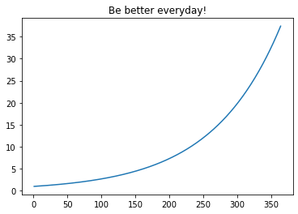

学Python一段时间后，都会听到一句“Life is short, so we learn Python! ”，恭喜你选择Python这门强大而有趣的语言。
输出数字a的绝对数
在学习代码之前，我给大家看一段话
There is such a number a, if a is greater than or equal to 0, we will print a; if a is less than 0, we will print -a
相信大家一看就明白了这是求某数的绝对值方法的英文描述。下面我们用精炼的Python语言表示
a = -50
if a >= 0:
print(a)
else:
print(-a)
50
Python号称是最说人话的编程语言，以最接近人类理解的方式构建代码。
Python与英语对比
从上面的例子中，我们已经知道了Python和英语一样都是一种语言，学习语言就需要学习基本的知识点，包括背单词和了解语法。
| 英语 | Python | 例如 |
|---|---|---|
| 单词 | 数据类型 | 列表、字符串、字典等 |
| 语法 | 逻辑语句 | if条件判读语句、for循环语句等 |
每天积累一点点
本部分非必须，仅仅为了展示python也可以作图
#mac
#!pip3 install matplotlib
#win
!pip install matplotlib
Looking in indexes: https://mirrors.aliyun.com/pypi/simple/
Requirement already satisfied: matplotlib in c:\users\thunderhit\appdata\local\programs\python\python37-32\lib\site-packages (3.2.1)
Requirement already satisfied: pyparsing!=2.0.4,!=2.1.2,!=2.1.6,>=2.0.1 in c:\users\thunderhit\appdata\local\programs\python\python37-32\lib\site-packages (from matplotlib) (2.4.7)
Requirement already satisfied: cycler>=0.10 in c:\users\thunderhit\appdata\local\programs\python\python37-32\lib\site-packages (from matplotlib) (0.10.0)
Requirement already satisfied: numpy>=1.11 in c:\users\thunderhit\appdata\local\programs\python\python37-32\lib\site-packages (from matplotlib) (1.18.2)
Requirement already satisfied: kiwisolver>=1.0.1 in c:\users\thunderhit\appdata\local\programs\python\python37-32\lib\site-packages (from matplotlib) (1.2.0)
Requirement already satisfied: python-dateutil>=2.1 in c:\users\thunderhit\appdata\local\programs\python\python37-32\lib\site-packages (from matplotlib) (2.8.1)
Requirement already satisfied: six in c:\users\thunderhit\appdata\local\programs\python\python37-32\lib\site-packages (from cycler>=0.10->matplotlib) (1.14.0)
import matplotlib.pyplot as plt
import math
%matplotlib inline
ability = 1
scale = 1.01
records = []
days = range(1, 365)
for day in days:
ability = ability*scale
records.append(ability)
plt.plot(days, records)
plt.title('Be better everyday!')
Text(0.5, 1.0, 'Be better everyday!')

Python是面向对象的编程语言
面向对象是最难理解的部分，这里大家只需要记住
- 类型和对象是紧密绑定的，说对象就是在说类型。
- 不同的类型有不同的功能，都是为了更高效的实现人类需求或者数据分析需求
| 类型 | 实例(对象) | 实例(对象) | 方法 |
|---|---|---|---|
| 猪 | 村东头老王家的猪 | 把猪把粮食变成肉 | 猪.产肉 |
| 牛 | 村东头老张家的耕牛 | 把粮食变成畜力 | 牛.耕地 |
| 列表 | hobbies = ['跑步', '乒乓球'， '篮球'，'篮球'] |
统计某群体爱好的分布, 查看各爱好的人数 | hobbies.count('篮球') |
| 字符串 | str1 = "Hello，World!" |
将文本内容由World更改为Python | str1.replace('World', 'Python') |
| 字典 | grade = {'David':98, 'Mary':88,...} |
方便数据检索 | grade.get('David') |
| ... | ... | ... | ... |
Python中的数据类型
不同的数据类型适合处理不同的数据，有不同的应用场景。
| 数据类型 | 例子 |
|---|---|
| 数字 | a = 5 |
| 字符串 | my_str = "abcdefg" |
| 列表 | my_list = [1, 2, 3] |
| 元组 | my_tuple = (1, 2, 3) |
| 字典 | my_dict = {'David': 25, 'Mark':30} |
| 空值 | None |